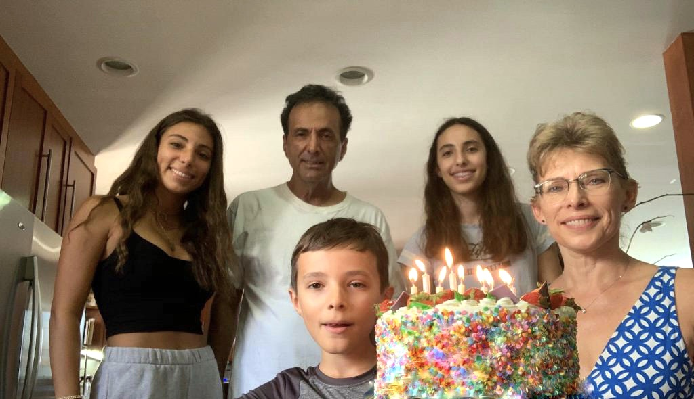

Hi, I’m Leyna (lie-nuh) and I’m 14 years old. At my old school, Mirman, I started a bit of programming but we mainly learned Javascript and in another class, used p5.js. Now at Windward, I’m learning more about programming and enjoying it more because I’m able to be more creative with what I create in the “Intro to Programming” class. Next year, I plan on taking AP Computer Science A and I want to continue learning more languages and expand my knowledge of computer science. If you want to see some of my previous projects that I’m proud of, head over to the Portfolio tab in the navigation bar above! I also love watching a lot of different tv shows, movies, and youtube and play video games with my friends. Within this website, I created a “recommendations” tab where you can find my favorite movies, youtubers, video games, and more. Click on the 3 bars and then recommendations to get there!
